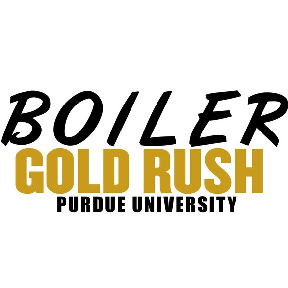

Organizations and Teamwork
Some organizations I was involved with are listed below:

Columbia University Robotics Club (CURC)
Controls Team Member
Sep 2020 – Present
• Designed and simulated a robot in Solidworks and ROS (using Python and Gazebo).
• Integrated PID system to controls.
• Worked closely with Mechanical team to make improvements to MATE ROV servicability, propeller layout, manipulator durability and chassis boyancy.

American Society of Mechanical Engineers (ASME)
Faculty Relations
Sep 2015 – May 2016
• Coordinated with faculty on applying their research to meaningful engineering projects.

Purdue Hackers
Member
Aug 2015 – May 2016
• Planned, executed and participated in hackathons.
• Coordinated workshops for app/web development.

Purdue International Programs
Multinational Integration Xchange (MIX) Team Leader
Jan 2014 – May 2015
• Mentored student leaders and facilitated team building activities to grow leadership abilities in students.
• Utilized skills gained through a year-long leadership training program to execute activities and events as part of an orientation program.
• Applied learnings from previous years to reorganize the orientation program.

Purdue Electric Vehicle Grand Prix
Powertrain Team Member
Aug 2013 – Jun 2014
• Analyzed the vehicle dynamics, compared loading metrics (cornering lateral forces and slip angles) to benchmark data.
• Modeled the kinematics of the suspension geometry to understand ride and handling (roll, pitch and yaw).
• Assembled two electric vehicles and finished 2nd place out of 15 teams at the Collegiate evGrand Prix hosted at the Indianapolis Motor Speedway.

Target Corporation & Periscope
Brand Ambassador Manager
Aug 2013 – Aug 2014
• Managed Brand Ambassadors for Target's 'Back-to-College' shopping event.
• Grow Target's consumer base within the collegiate community and increased brand awareness.
• Drive digital engagement with the brand through authentic social media content.

Purdue Boiler Gold Rush International (BGRi)
Team Leader
Jan 2013 – May 2014
• Brought together a diverse team of 8 students from all races and ethnicities.
• Introduced cross cultural training programs, such as FISH! Philosophy, to the teams and professional staff.
• The FISH! Philosophy allows organizations to be successful, build strong relationships and make incredible experiences for others.